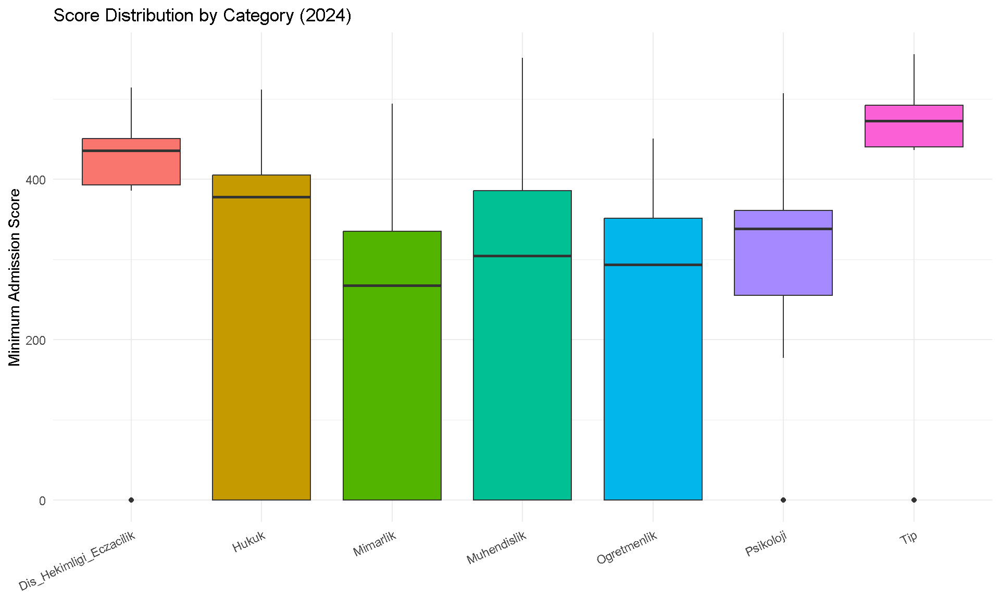
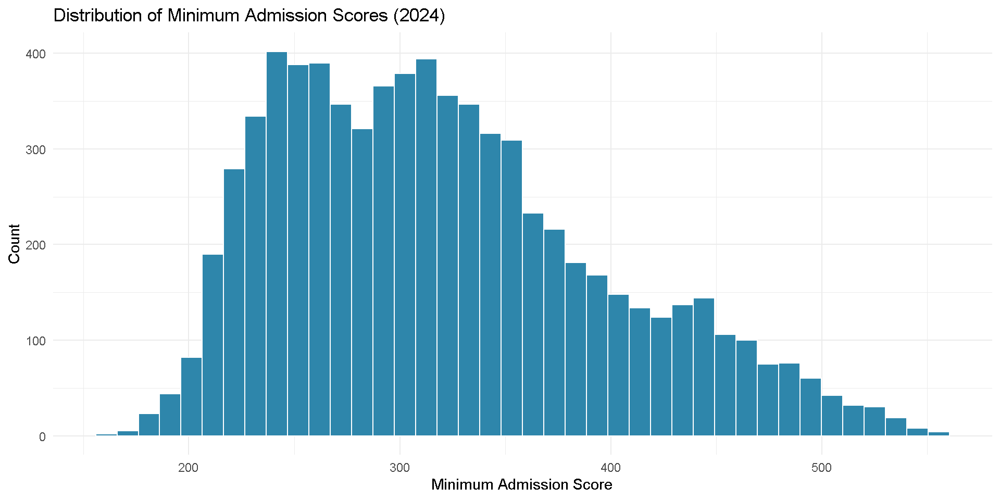
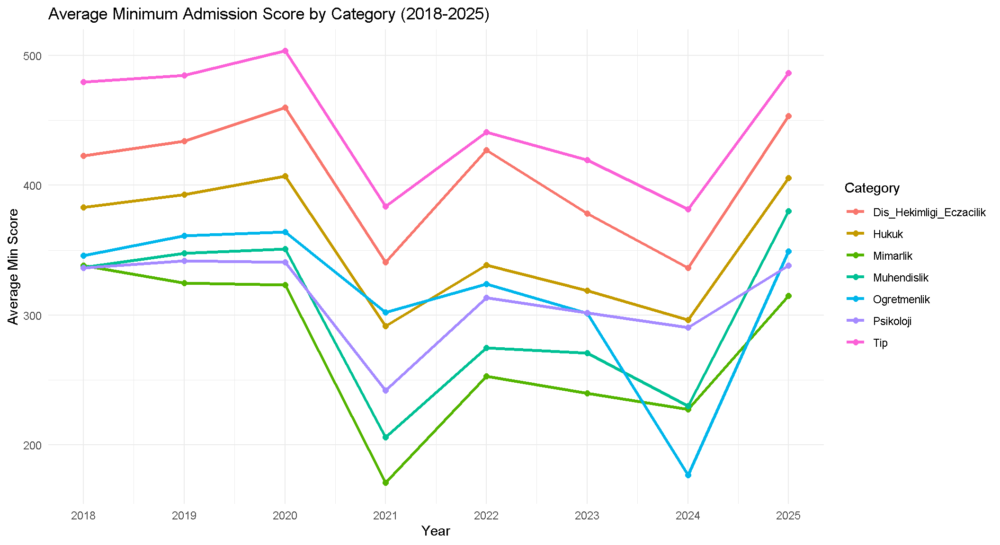
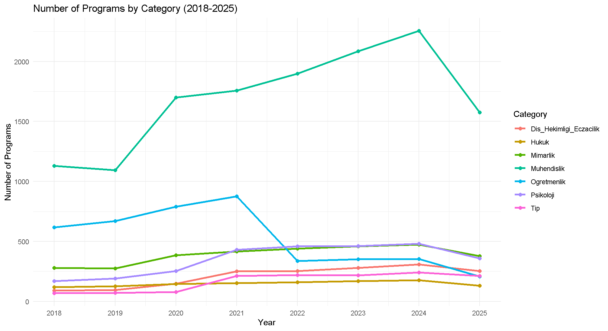
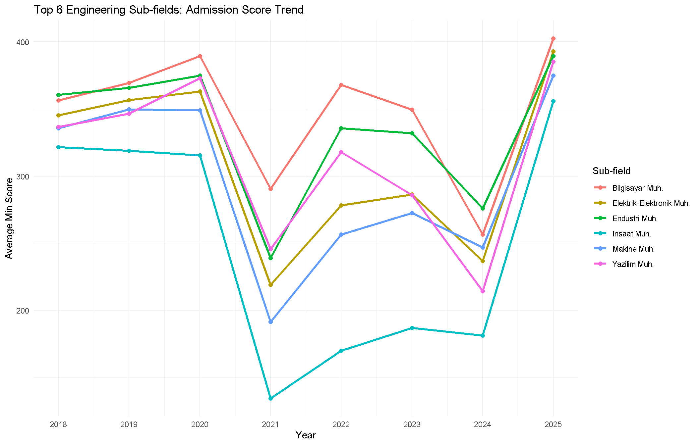
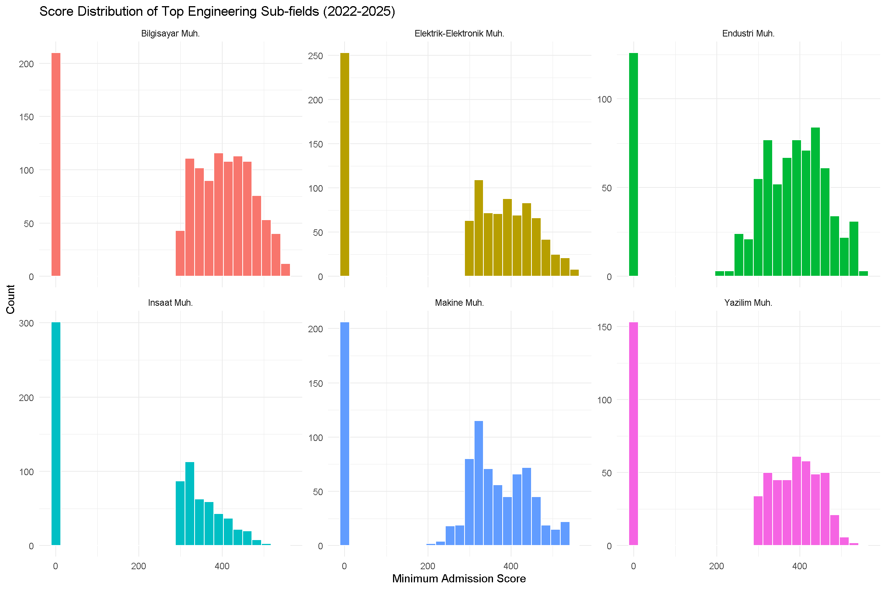
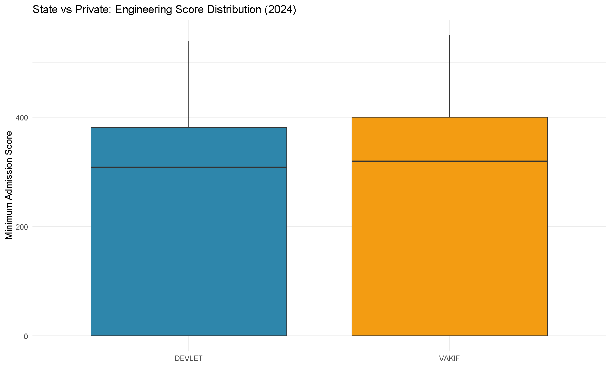
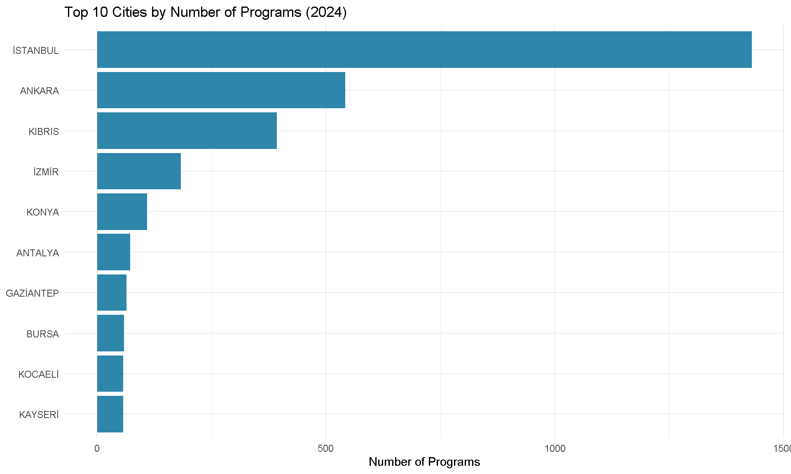
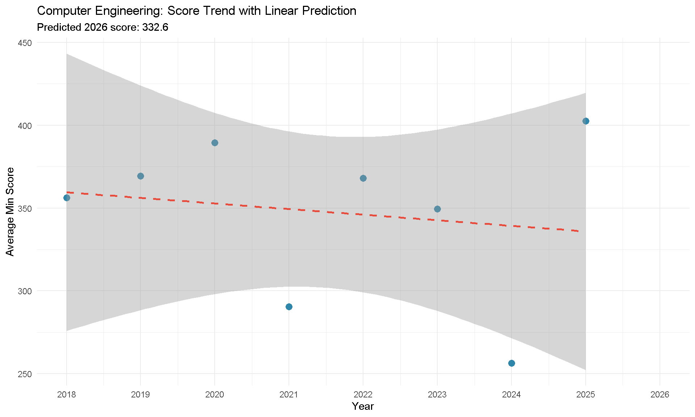

Trends in University Department Preferences in Turkey (2018-2025)
Author
Muhammed Reha Özdemir and Yeşim Kaya
1. Project Overview and Scope
Abstract: This study looks at how university department preferences have changed in Turkey between 2018 and 2025 using data from YÖK Atlas. We examined seven major field categories through admission scores and program counts. Our results show that medicine and dentistry/pharmacy stayed as the most competitive fields during the whole period. Computer engineering leads among the engineering sub-fields, with a clear upward trend toward 2025. State universities also keep a small score advantage over private ones. A simple linear model is applied at the end to project future score trends for computer engineering. Overall, the results give a data-driven view of how student preferences and higher education supply have evolved in Turkey.
This project looks at how preferences for university departments in Turkey have shifted between 2018 and 2025. We used data from YÖK Atlas, which is the official platform run by the Council of Higher Education. The study tracks admission scores and program counts across seven major field categories: engineering, medicine, law, psychology, teaching, architecture, and dentistry/pharmacy. The main question we try to answer is simple. Which fields are gaining or losing popularity among students, and what might be driving these changes?
Our objectives for this study are as follows:
To identify demand trends at the category level across the 2018-2025 period
To compare engineering sub-fields, especially computer engineering versus civil and industrial engineering
To investigate the score gap between state and private university programs
To explore how programs are distributed across cities in Turkey
To build a simple trend model and estimate where admission scores might be heading
2. Data
2.1 Data Sources
We combined three data sources to cover the full 2018-2025 period. The first one is the thestats R package developed by Mustafa Cavus and Olgun Aydin. This package provides structured YÖK Atlas data for the years 2018 to 2020. It is very convenient for the early years, but its coverage stops at 2020. To fill the 2021 gap, we used a third-party dataset from GitHub (MorphaxTheDeveloper), which was compiled from YÖK Atlas records for that year. For the more recent years between 2022 and 2025, we pulled data directly from the YÖK Atlas JSON API using the httr2 package in R. Among the three sources, the API data is the most reliable since it comes from the official system. The third-party 2021 dataset needed extra verification during preprocessing.
The three sources use slightly different column names and encoding conventions. We merged them into a single table and standardized department names by matching Turkish and English variants. University type labels (unitur) were also unified. Finally, we added a bolum_grubu column to group programs into broader sub-categories for easier comparison.
Data loading and preprocessing code
# Read the combined datasetdf <-fread("yokatlas_FINAL_CLEAN.csv", encoding ="UTF-8")# Convert to tibble for tidyverse compatibilitydf <-as_tibble(df)# Quick structure checkcat("Dataset dimensions:", nrow(df), "rows x", ncol(df), "columns\n")
The dataset covers eight academic years and contains records from all seven field categories. Medicine has the highest average admission score at 433, followed by dentistry/pharmacy at 396. Architecture sits at the bottom with 266. Engineering has the largest number of programs by far, with over 13,000 records across all years. It averages around 291, which reflects the wide range of programs it includes. The 2021 row shows an unusually high program count of 18,357. This is likely an artifact of how the third-party data source for that year was structured, rather than a real spike in offerings.
3. Analysis
3.1 Exploratory Data Analysis
Score distribution by category
df |>filter(kategori !="Diger", year ==2024) |>ggplot(aes(x = kategori, y = puan, fill = kategori)) +geom_boxplot(show.legend =FALSE) +labs(title ="Score Distribution by Category (2024)",x =NULL, y ="Minimum Admission Score") +theme_minimal() +theme(axis.text.x =element_text(angle =25, hjust =1))

Figure 1: Minimum admission score distribution across field categories in 2024.
Looking at Figure 1, the 2024 score distributions show a lot of variation both across and within categories. Medicine and dentistry/pharmacy have the highest and most compact distributions. This means most programs in these fields require similar high scores. Law and engineering show wider spreads. Engineering covers a very broad range, from around 0 to well above 400. This points to the existence of very selective programs and much lower-threshold ones within the same category. Psychology’s interquartile range sits mostly between 250 and 375, with a few outliers near zero that are likely low-quota private programs.
Overall score distribution
df |>filter(year ==2024, !is.na(puan), puan >0) |>ggplot(aes(x = puan)) +geom_histogram(bins =40, fill ="#2E86AB", color ="white") +labs(title ="Distribution of Minimum Admission Scores (2024)",x ="Minimum Admission Score", y ="Count") +theme_minimal()

Figure 2: Histogram of minimum admission scores across all programs in 2024.
The overall distribution of admission scores in 2024 is roughly bell-shaped, as Figure 2 shows. The highest concentration of programs falls between 250 and 350 points. There is also a secondary cluster near the lower end of the scale. These are mostly programs that did not fully fill their quotas or have very low demand.
Missing values are mostly in the yerlesen (enrolled students) and sira (rank) columns. This is expected since not all programs fill their quotas every year. Also, rank data is not always published for very low-scoring entries. The puan column is our primary variable, and it has a relatively small number of missing entries. We excluded these from calculations using na.rm = TRUE.
The summary table above gives us a clearer picture. One thing that stands out is the big gap between mean and median values in every category. For medicine, the mean is 381 while the median is 472. For engineering, it is 230 versus 304. This happens because the mean is pulled down by programs that did not fill or scored very low. The median is a much more reliable indicator of the “typical” program in each category. The standard deviation is also high across the board, which confirms the wide internal spread we already saw in the boxplot.
kontenjan yerlesen puan sira
kontenjan 1.000 0.974 0.006 0.045
yerlesen 0.974 1.000 0.072 0.074
puan 0.006 0.072 1.000 -0.134
sira 0.045 0.074 -0.134 1.000
The correlation matrix gives a few interesting results. First, the correlation between kontenjan (quota) and yerlesen (enrolled students) is 0.97, which is almost perfect. This tells us that most programs in Turkey fill very close to their full capacity. Second, puan and sira show a weak negative correlation of about -0.13. This makes sense (higher score = lower rank number), but the relationship is weaker than expected, probably because the data mixes very different score types (SAY, EA) across categories. Third, puan and kontenjan have a correlation near zero. So the size of a program is not really tied to how selective it is. A small, low-demand program can have a low score just as easily as a large one.
3.2 Category Trend Analysis
Average score trend by category
# Average minimum score by category over yearscategory_trend <- df |>filter(kategori !="Diger") |>group_by(year, kategori) |>summarise(avg_puan =mean(puan, na.rm =TRUE), .groups ="drop")ggplot(category_trend, aes(x = year, y = avg_puan, color = kategori)) +geom_line(linewidth =1.1) +geom_point(size =2) +scale_x_continuous(breaks =2018:2025) +labs(title ="Average Minimum Admission Score by Category (2018-2025)",x ="Year", y ="Average Min Score", color ="Category") +theme_minimal()

Figure 3: Average minimum admission score by field category from 2018 to 2025.
The most striking feature of Figure 3 is the sharp drop across all categories in 2021, followed by a partial recovery in 2022. This pattern probably comes from a data source change for 2021 rather than a real-year effect, so it should be read with caution. If we put that aside, medicine and dentistry/pharmacy have held the highest scores during the whole period, and both show an upward push toward 2025. Law recovered strongly after 2022 and is trending upward. Engineering and architecture have stayed relatively flat. Psychology and teaching remain in the lower range with no clear directional movement.
Number of programs by category
# Program count trendprogram_count <- df |>filter(kategori !="Diger") |>group_by(year, kategori) |>summarise(n =n(), .groups ="drop")ggplot(program_count, aes(x = year, y = n, color = kategori)) +geom_line(linewidth =1.1) +geom_point(size =2) +scale_x_continuous(breaks =2018:2025) +labs(title ="Number of Programs by Category (2018-2025)",x ="Year", y ="Number of Programs", color ="Category") +theme_minimal()

Figure 4: Number of programs per field category from 2018 to 2025.
In Figure 4, engineering dominates the program count chart throughout the entire period. It reached a peak of around 2,300 programs in 2024 before dropping in 2025. Teaching is the second largest category, but it shows a sharp decline after 2021. This is possibly due to quota reductions by the government. Psychology has grown modestly but steadily. It went from near the bottom of the chart in 2018 to clearly separating itself from the smaller categories by 2024. Dentistry/pharmacy and medicine remain flat and low in count, which is consistent with the controlled and limited capacity of those fields.
3.3 Engineering Sub-field Analysis
Engineering sub-field score trends
# Top 6 engineering sub-fields by program counttop_eng <- df |>filter(kategori =="Muhendislik", bolum_grubu !="Diger Muhendislik") |>group_by(bolum_grubu) |>summarise(n =n()) |>arrange(desc(n)) |>head(6) |>pull(bolum_grubu)# Score trend for top sub-fieldseng_trend <- df |>filter(bolum_grubu %in% top_eng) |>group_by(year, bolum_grubu) |>summarise(avg_puan =mean(puan, na.rm =TRUE), .groups ="drop")ggplot(eng_trend, aes(x = year, y = avg_puan, color = bolum_grubu)) +geom_line(linewidth =1.1) +geom_point(size =2) +scale_x_continuous(breaks =2018:2025) +labs(title ="Top 6 Engineering Sub-fields: Admission Score Trend",x ="Year", y ="Average Min Score", color ="Sub-field") +theme_minimal()

Figure 5: Average minimum admission score trend for the top 6 engineering sub-fields.
Among the six sub-fields in Figure 5, computer engineering has kept the highest average scores for most of the period and shows a strong recovery toward 2025, reaching around 400. Software engineering follows a similar upward trajectory in recent years. Industrial engineering and electrical-electronics engineering have tracked each other closely throughout, sitting in the mid-range. Civil engineering stays at the bottom of the group and shows the widest dip in 2021. It seems to be the most sensitive sub-field to whatever data issue affected that year. The overall pattern across all sub-fields is a convergence upward in 2025, which may reflect a real increase in competition across engineering as a whole.
Engineering sub-fields panel view
df |>filter(bolum_grubu %in% top_eng, year >=2022) |>ggplot(aes(x = puan, fill = bolum_grubu)) +geom_histogram(bins =25, show.legend =FALSE, color ="white") +facet_wrap(~bolum_grubu, scales ="free_y") +labs(title ="Score Distribution of Top Engineering Sub-fields (2022-2025)",x ="Minimum Admission Score", y ="Count") +theme_minimal()

Figure 6: Score distribution panels for the top 6 engineering sub-fields (2022-2025).
Figure 6 highlights the differences between sub-fields more clearly. Computer engineering has a wider distribution that is shifted toward higher scores. Civil engineering programs, on the other hand, are clustered at the lower end. This confirms that the demand gap between sub-fields is not only about averages. It extends across the entire score range.
State vs Private engineering programs
df |>filter(kategori =="Muhendislik", unitur %in%c("DEVLET", "VAKIF"), year ==2024) |>ggplot(aes(x = unitur, y = puan, fill = unitur)) +geom_boxplot(show.legend =FALSE) +scale_fill_manual(values =c("DEVLET"="#2E86AB", "VAKIF"="#F39C12")) +labs(title ="State vs Private: Engineering Score Distribution (2024)",x =NULL, y ="Minimum Admission Score") +theme_minimal()

Figure 7: Minimum admission score distribution for state and private engineering programs in 2024.
Contrary to what we might expect, Figure 7 shows that the score distributions for state and private engineering programs in 2024 are quite similar in terms of median (both sit around 280-290). The main difference is in the spread. Private university programs show a wider interquartile range and a longer lower tail. This means there are more private programs with very low admission scores pulling their distribution down. State programs also have very low outliers, but their overall box is slightly more compact. The difference is real but not as dramatic as we initially thought.
3.4 Regional Analysis
Top 10 cities by number of programs
top_cities <- df |>filter(!is.na(il), il !="", year ==2024, kategori !="Diger") |>group_by(il) |>summarise(n_programs =n(),avg_puan =round(mean(puan, na.rm =TRUE), 1)) |>arrange(desc(n_programs)) |>head(10)ggplot(top_cities, aes(x =reorder(il, n_programs), y = n_programs)) +geom_col(fill ="#2E86AB") +coord_flip() +labs(title ="Top 10 Cities by Number of Programs (2024)",x =NULL, y ="Number of Programs") +theme_minimal()

Figure 8: Top 10 cities in Turkey by number of university programs in 2024.
In Figure 8, Istanbul leads by a very large margin with around 1,400 programs. This is more than double Ankara’s roughly 580. What we did not expect was finding Kıbrıs (Northern Cyprus) in third place with about 390 programs, ahead of İzmir. This reflects the large number of Turkish-founded universities operating there that mainly cater to Turkish students. After Konya in fifth place, the remaining cities (Antalya, Gaziantep, Bursa, and Kayseri) are all clustered closely together with similar program counts, ranging roughly between 57 and 72.
3.5 Trend Prediction
Linear trend model for Computer Engineering
# Simple linear model for Bilgisayar Muh.bilgisayar <- df |>filter(bolum_grubu =="Bilgisayar Muh.") |>group_by(year) |>summarise(avg_puan =mean(puan, na.rm =TRUE))model <-lm(avg_puan ~ year, data = bilgisayar)cat("Linear model summary:\n")
ggplot(bilgisayar, aes(x = year, y = avg_puan)) +geom_point(size =3, color ="#2E86AB") +geom_smooth(method ="lm", se =TRUE, color ="#E74C3C", linetype ="dashed") +scale_x_continuous(breaks =2018:2026, limits =c(2018, 2026)) +labs(title ="Computer Engineering: Score Trend with Linear Prediction",x ="Year", y ="Average Min Score",subtitle =paste0("Predicted 2026 score: ", round(pred_2026, 1))) +theme_minimal()
`geom_smooth()` using formula = 'y ~ x'

Figure 9: Linear trend model fitted to computer engineering average admission scores, with prediction for 2026.
The linear model fitted to computer engineering scores in Figure 9 shows a slightly negative slope. This means the trend line is gently declining over the 2018-2025 period. The decline is mostly driven by the 2021 outlier and the low 2024 value, which pull the regression line down despite the strong recovery in 2025. The predicted 2026 score of 332.6 is therefore lower than the most recent observed value of around 405. This suggests that the model is not capturing the actual recent momentum well. The confidence interval is also very wide, which shows high uncertainty. This analysis is a useful exercise in trend modeling, but a more robust approach (for example, excluding the anomalous 2021 data point or using a nonlinear model) would give a more reliable forecast.
4. Discussion
The results give us a broad picture of how university preferences have shifted in Turkey over the last eight years. Medicine and dentistry/pharmacy remained the most selective fields, which is consistent with the well-known prestige of healthcare careers in Turkey. Engineering, despite being the largest category, did not show a clear directional trend at the aggregate level. The real story for engineering only appears when we break it down by sub-field. Computer engineering and software engineering have pulled ahead, while civil engineering has lost ground. This matches the wider economic story: a growing tech sector and a slowdown in construction.
There are several limitations in this work that we want to mention. First, the 2021 data came from a third-party source and shows a clear discontinuity in our trend charts. We tried to keep this in mind during interpretation, but it still affects the regression model results. Second, our keyword-based program name mapping handled most cases well, but some edge cases (such as rare or newly opened sub-fields) might have been classified into the “Diger Muhendislik” group instead of their proper category. Third, our linear trend model is intentionally simple, which is fine as an introductory forecast but is not strong enough to make policy recommendations. Future work could use ARIMA or other time-series models that better handle outliers and short series.
Another point worth mentioning is the unexpected finding about Kıbrıs in the regional analysis. Although it is not officially part of Turkey, the large number of programs hosted by Turkish-affiliated universities there is significant. A separate analysis focused only on the Kıbrıs programs could be an interesting extension of this study.
5. Key Takeaways
This study analyzed university admission trends in Turkey across seven field categories using YÖK Atlas data spanning 2018 to 2025. The dataset covers tens of thousands of program records from both state and private institutions.
Medicine and dentistry/pharmacy consistently maintained the highest admission scores throughout the period. Engineering, despite being the largest category by program count, showed a wide internal spread driven by the mix of highly selective and open-access programs.
Computer engineering and software engineering emerged as the most competitive engineering sub-fields by 2025. Civil engineering stayed at the lower end, which reflects a broader shift in student preferences toward technology-oriented careers.
State and private university engineering programs showed more similar score distributions than expected. The key difference is that private institutions include a longer tail of very low-scoring programs, rather than a uniformly lower performance level.
A simple linear model predicts a 2026 computer engineering score of 332.6, but the wide confidence interval and the influence of the anomalous 2021 data point make this estimate unreliable. The actual 2025 value of around 405 suggests the real trend may be stronger than the model captures.
6. Conclusion
This project tracked how Turkish university preferences have evolved across seven major field categories between 2018 and 2025. Combining three different data sources allowed us to build a continuous picture across the years, even though it introduced some methodological challenges. The clearest signals from the data are the steady dominance of medicine and dentistry, the rise of computer-related engineering fields, and the relative decline of civil engineering. These findings are consistent with broader economic and labor market trends in Turkey. We hope this work provides a useful starting point for further analyses, especially ones that incorporate additional dimensions such as employment outcomes or program-specific student demographics.
AI usage note: Claude was used to assist with data collection scripting, preprocessing of multiple data sources and code debugging. All analysis interpretations and written content belongs to the authors.